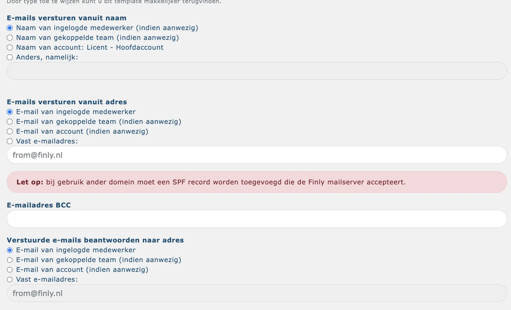

Een berichtsjabloon aanmaken en instellen
Stap-voor-stap uitleg voor beheerders over het aanmaken van een berichtsjabloon in Finly: naam, onderwerp, type, afzender, e-maildomein, BCC, inhoud, bijlagen en tags.
Berichtsjablonen gebruik je in Finly als basis voor e-mails die vanuit het systeem worden verstuurd, zoals afspraakbevestigingen, herinneringen of dossierberichten. Je beheert ze via Instellingen → Sjablonen.
Een nieuw sjabloon aanmaken
Ga naar Instellingen → Sjablonen en klik op Berichtsjabloon +. Er opent een formulier met de volgende velden.
Naam berichtsjabloon
De interne naam van het sjabloon. Gebruik deze naam om het sjabloon terug te vinden bij het instellen van afsprakentypes, dossiers of andere onderdelen. De naam is niet zichtbaar voor de eindgebruiker.
Onderwerp
Het e-mailonderwerp dat de ontvanger ziet. Je kunt hier ook tags gebruiken, zodat het onderwerp dynamisch wordt ingevuld. Zie het onderdeel Tags gebruiken verderop in dit artikel.
Type
Het type bepaalt in welke categorie het sjabloon wordt ingedeeld. Bij het koppelen van sjablonen, bijvoorbeeld bij een afspraaktype, kun je filteren op type. Gebruik dit om je sjablonen overzichtelijk te houden.
Verzenden vanuit naam
De weergavenaam die de ontvanger ziet als afzender. Je kunt kiezen uit:
De naam van de medewerker vanuit wie de mail is verzonden
De naam van het team
De naam van het account (kantoor)
Een eigen, zelf in te vullen naam
Verzenden vanuit e-mailadres
Hier stel je een specifiek afzenderadres in. Dat werkt alleen als je Finly toestemming hebt gegeven om te mailen vanuit jouw e-maildomein. Is er niets ingesteld, dan verstuurt Finly de mail vanuit from@finly.nl als standaard afzenderadres.
Kies je bij "Verzenden vanuit adres" voor E-mail van ingelogde medewerker, dan verstuurt Finly de mail vanaf het e-mailadres dat staat ingesteld bij het veld E-mail (account) op het profiel van de betreffende medewerker.

Troubleshooting: e-mail wordt verstuurd vanuit from@finly.nl in plaats van het eigen adres
Heb je bij "Verzenden vanuit adres" gekozen voor vanuit account, maar wordt de e-mail toch verstuurd vanuit from@finly.nl? Dan is waarschijnlijk het algemene e-mailadres van het account nog niet ingevuld.
Los je dit op door:
Ga naar Instellingen → Account.
Vul het veld voor het algemene e-mailadres in met het gewenste afzenderadres.
Sla de instelling op.
Vanaf dat moment gebruikt elk sjabloon dat is ingesteld op "vanuit account" automatisch dit adres als afzender, in plaats van terug te vallen op from@finly.nl.
BCC
Vul hier een e-mailadres in als je altijd een kopie op de achtergrond wilt meesturen bij gebruik van dit sjabloon. Let op: in een hoofd- en subaccount-omgeving werkt BCC anders. Zie hiervoor: BCC instellen bij een hoofd- en subaccount-omgeving.
Inhoud van het sjabloon
Hier stel je de standaardtekst van de e-mail in, inclusief de handtekening. Gebruik de voorbeeldweergave om te controleren hoe de e-mail er voor de ontvanger uitziet.
Handtekening centraal beheren via de account-handtekening tags
Je kunt de handtekening in een sjabloon ook ophalen met een tag. Deze tags halen de handtekening op die is ingesteld via Instellingen → Account. Er zijn twee handtekening-tags beschikbaar:
%HANDTEKENING_NIEUW%haalt de account-handtekening op voor nieuwe berichten.%HANDTEKENING_BEANTWOORDEN%haalt de account-handtekening op voor het beantwoorden van berichten.
Plaats de tag in de inhoud van het sjabloon op de plek waar de handtekening moet komen. Bij het verzenden vervangt Finly de tag automatisch door de actuele account-handtekening.
Wat is het voordeel van de handtekening-tags?
Gebruik je de handtekening-tag in je sjablonen? Dan beheer je de handtekening op één centrale plek. Pas de handtekening aan via Instellingen → Account en sla op. Alle sjablonen die de tag gebruiken tonen daarna automatisch de nieuwe handtekening. Je hoeft de handtekening dus niet per sjabloon aan te passen.
Standaard bijlagen toevoegen
Je kunt documenten als vaste bijlage aan het sjabloon koppelen. Die documenten moet je eerst toevoegen via Instellingen → Documenten. Zodra een document daar is opgeslagen, kun je het selecteren als standaard bijlage bij het sjabloon.
Tags gebruiken in de inhoud of het onderwerp
Tags zijn dynamische plaatshouders die automatisch worden vervangen door de actuele waarde op het moment van verzenden. Zo wordt %KLANTNAAM% vervangen door de naam van de klant.
Tags kun je zowel in het onderwerp als in de berichttekst gebruiken.
Gebruik de voorbeeldweergave om te controleren of tags correct worden ingevuld.
Let op: typ de tagnaam exact over, inclusief de procenttekens. Een extra spatie of afwijkend hoofdlettergebruik zorgt ervoor dat de tag niet wordt herkend en dus niet wordt ingevuld.
Waar vind je de beschikbare tags?
Ga naar Instellingen → Sjablonen en open het gewenste berichtsjabloon. In het venster "Berichtsjabloon wijzigen" zie je bovenaan aan welk afspraaktype het sjabloon gekoppeld is en de mailtekst met de tags erin. Scroll helemaal naar de onderkant van dat venster: daar staat het volledige overzicht van alle tags die je in dit sjabloon kunt gebruiken, gegroepeerd per categorie (klant, dossier, product, etc.).
Hoe controleer je of een tag correct wordt ingevuld?
Gebruik de voorbeeldweergave in het sjabloon om te zien hoe de e-mail eruitziet met ingevulde waarden. Wil je de werkelijke invulling vanuit klantvelden controleren? Ga dan naar een testklant, verstuur een bericht en selecteer het betreffende sjabloon. Controleer daarna bij de communicatiehistorie of de tags correct zijn vervangen.
Wat als een tag leeg blijft?
Een tag blijft leeg als het bijbehorende veld niet is ingevuld bij de klant, het dossier of het product. Er verschijnt geen foutmelding. Controleer in dat geval of de tagnaam exact overeenkomt met het tagoverzicht, en of het veld is ingevuld bij de klant, het dossier of het product waarvoor je het bericht verstuurt.
Troubleshooting: de aanhef bij een zakelijke klant klopt niet
Gebruik je hetzelfde afspraaktype en berichtsjabloon voor particuliere én zakelijke klanten, dan klopt de aanhef bij zakelijke klanten vaak niet. Particuliere en zakelijke klanten hebben andere klantgegevens (voornaam/achternaam/geslacht tegenover bedrijfsnaam/contactpersoon) en dus ook andere tags. Een particulier-tag voor de aanhef blijft bij een zakelijke klant leeg of levert een onjuiste aanhef op.
Oplossing:
Maak voor zakelijke klanten een los afspraaktype aan, naast het bestaande afspraaktype voor particuliere klanten.
Maak hiervoor ook een los berichtsjabloon aan (of dupliceer het bestaande sjabloon) en koppel dit sjabloon aan het zakelijke afspraaktype.
Open het zakelijke sjabloon via Instellingen → Sjablonen. In het venster "Berichtsjabloon wijzigen" zie je de mailtekst met de tags, en onderaan de pagina het volledige tagoverzicht. Zoek daar de tag die bij het klanttype zakelijk hoort (bijvoorbeeld bedrijfsnaam of contactpersoon) en gebruik die in plaats van de particulier-tag voor aanhef, voorletters of achternaam.
Testen zonder te versturen: ga naar een zakelijke testklant en stel daar een bericht op met het aangepaste sjabloon. Je hoeft de mail niet te versturen: in de voorbeeldweergave zie je direct wat er voor elke tag wordt ingevuld. Zo controleer je snel of de aanhef klopt, voordat je het sjabloon voor echte klanten gebruikt.
Hoe pas je de handtekening van alle sjablonen in één keer aan?
Gebruik in de sjablonen de tag %HANDTEKENING_NIEUW% of %HANDTEKENING_BEANTWOORDEN% in plaats van een vaste handtekeningtekst. Pas daarna de handtekening aan via Instellingen → Account. Het systeem gebruikt vanaf dat moment de nieuwe handtekening in alle sjablonen die de tag bevatten.
Gerelateerde artikelen
Zoekwoorden
berichtsjabloon, sjabloon aanmaken, e-mailsjabloon, afzender instellen, e-maildomein, BCC sjabloon, tags sjabloon, dynamische tags, standaard bijlage, sjabloon type, onderwerp sjabloon, instellingen sjablonen, Finly sjablonen, tagnaam opzoeken, tag leeg, tag niet ingevuld, klantveld tag, dossierveld tag, productveld tag, email ingelogde medewerker, email account medewerker, account handtekening, handtekening tag, handtekening centraal aanpassen, handtekening alle sjablonen, HANDTEKENING_NIEUW, HANDTEKENING_BEANTWOORDEN, handtekening instellingen account, aanhef zakelijke klant, aanhef klopt niet, verkeerde aanhef, afspraaktype zakelijk, afspraaktype particulier, sjabloon zakelijke klant, testklant tags controleren, from@finly.nl, afzender from@finly.nl, verkeerd afzenderadres, vanuit account versturen, algemeen e-mailadres account, standaard afzender account, herinnering verkeerd verzonden, e-mailadres account instellen
Bron: helpcenter Finly